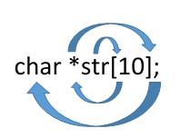
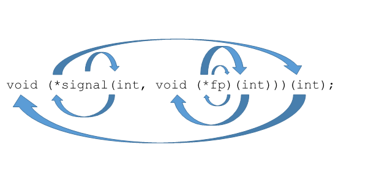

Где находиться типу: справа или слева?
Как-то увидев очередную статью на Хабре, посвященную для меня совершенно новому и неизведанному языку Go, решил попробовать, что это за зверь и с чем его едят (В основном, конечно, понравился логотип). Конечно, язык имеет много возможностей и достаточно удобен. Но что меня сразу удивило, это отличный от C-подобных языков принцип объявления переменных, а именно тип переменных описывается справа от имени переменной. У меня как человека, практически выросшего на С, это вызывало удивление. Потом я конечно вспомнил Pascal, что там тоже тип переменной был справа. Заинтересовавшись этим вопросом, я попытался разобраться, почему используется тот или иной синтаксис описания типа переменных в этих 2-х языках.
Начнем с описания синтаксиса объявления переменных в С-подобных языках. В С было решено отказаться от отдельного синтаксиса описания переменных и позволить объявлять переменные как выражения:
int x;
Как мы видим, тип переменной стоит слева, затем имя переменной. Благодаря этому мы максимально приближаем объявление переменной к обычному выражению. Допустим, к такому:
int x = 5;
Или такому:
int x = y*z;
В принципе, все просто и понятно, и вполне логично. Теперь посмотрим на определение функций в C.
Изначально в C использовался вот такой синтаксис определения функции:
int main(argc, argv)
int argc;
char *argv[];
{ /* ... */ }
Типы переменных описывались не вместе с именами аргументов, а после закрывающей круглой скобки. Но потом синтаксис заменили на другой:
int main(int argc, char *argv[]) { /* ... */ }
Здесь все тоже достаточно просто и понятно. Но это удобство начинает испаряться, когда в дело вступают указатели на функции и функции, которые могут принимать указатели на них.
int (*fp)(int a, int b);
Здесь fp — указатель на функцию, принимающую 2 аргумента и возвращающая int. В принципе, не сложно, но вот что будет если одним из аргументов будет указатель на функцию:
int (*fp)(int (*ff)(int x, int y), int b)
Уже как-то сложновато или вот такой пример:
int (*(*fp)(int (*)(int, int), int))(int, int)
В нем, если честно, я заблудился.
Как видно из описания, при декларировании указателей на функции в языках С есть существенный недостаток в читаемости кода. Теперь посмотрим, какой метод предлагает использовать для чтения определения переменных в С Дэвид Андерсон(David Anderson). Чтение происходит по методу Clockwise/Spiral Rule (часовой стрелке/спирали).
Данный метод имеет 3 правила:
Пример 1:

Следуя правилу, начинаем с неизвестной str:
— str массив 10-и элементов;
— str массив 10-и указателей;
— str массив 10-и указателей на тип char.
Возьмем пример посложнее
Пример 2:

— signal – это функция которая принимает int и…
— fp указатель на …
— fp указатель на функцию, принимающую int и возвращающую…
— fp указатель на функцию, принимающую int и ничего не возвращающую;
— signal – это функция, которая принимает int и указатель на функцию, принимающую int и ничего не возвращающую;
— signal – это функция, которая принимает int и указатель на функцию, принимающую int и ничего не возвращающую, и возвращает указатель на…
— signal – это функция, которая принимает int и указатель на функцию, принимающую int и ничего не возвращающую, и возвращает указатель на функцию, принимающую int…
— signal – это функция, которая принимает int и указатель на функцию, принимающую int и ничего не возвращающую, и возвращает указатель на функцию, принимающую int и возвращающую void.
Вот так, без особых усилий, предлагает нам читать определение переменных Дэвид Андерсон.
Теперь рассмотрим диаметрально противоположный синтаксис, когда тип переменной находится справа от имени переменной, на примере Go.
В Go (как и в Паскале) переменные читаются слева направо и выглядят вот так:
var x int
var p *int
var a [3]int
Здесь не нужно применять никаких спиральных методов, читается просто:
— переменная a — это массив, состоящий из 3-х элементов типа int.
С функциями тоже все достаточно просто:
func main(argc int, argv []string) int
И данное объявление тоже читается с легкостью слева направо. Даже сложные функции, принимающие другие функции, вполне читаются слева направо:
f func(func(int,int) int, int) int
f — функция, принимающая функцию, которая, в свою очередь, принимает в параметрах 2 целых числа и возвращает целое число, и целое число, и возвращающая целое число.
Вот такие имеет отличия определение переменных в языках семейства C и Go. Очевидно, Go явно в этом выигрывает. Но если теперь вспомнить, какие языки выросли из старого доброго С – это С++, C#, Java — все они используют определение переменных такого типа. И они построены на парадигмах ООП и не используют (или практически не используют) передачу указателей на функции, все это нам заменили классы. Частично можно считать, что недостатки, которые выявляются у определения типа переменной слева, улетучиваются при использовании ООП.